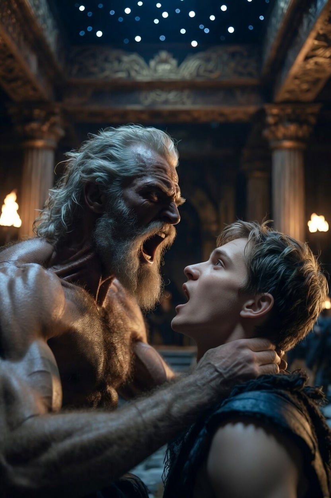
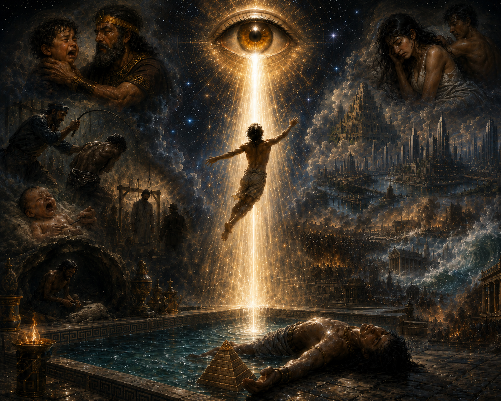

Часть 1
Глава 2.9
Циля была должна вот-вот разродиться. Ханох ходил как затравленный. Если эта тварь выродит мальчика, у Йереда станет одним наследником больше. Йеред не просто так устроил это действо со свадьбой - кого из двоих отец предпочтет, было ясно заранее. И тогда во дворце Ханох станет лишним...
Наама сказала, что скоро всё кончится - Ханох станет владетелем на другом конце света, и они вместе улетят в дальние земли. Надо только, чтобы Адам изъявил свою волю.
Наама… Он пытался читать, но буквы расплывались и смысл ускользал. Пальцы касались свитков, но ощущали кожу Наамы. Тёплую. Мягкую… Казалось, она была здесь, рядом с ним. И от этой мысли внутри всё начинало дрожать…
Сначала он услышал звон в правом ухе. Потом понял – отец врезал ему! Ханох отшатнулся, но отец уже схватил его за загривок. Они были лоб в лоб. Йеред был страшен, в его глазах билось бешенство. И Ханох понял – отец может убить его прямо сейчас.
— Смотреть на меня, ты, бездельник! — Голос Йереда сорвался на рык.

И опять звон, теперь в другом ухе.
- Не смей прятать глаз! Ты же воин!
Ханох рванулся, но рука Йереда даже не дрогнула. Он стиснул зубы.
Синие жилы взбухли у отца на висках. В такие мгновения даже старые воины избегали его бешеных глаз. Пояс перекручен, узел небрежно затянут.
- Смотри на меня! Ну! Ты, трус!
Взгляд Ханоха прилип к кривому узлу. Не было сил смотреть на отца. Страшно так, что Ханох удивился, как устоял, не упал.
- Отец, - шепчет наследник. – Ну, отец…
- Что бормочешь?! Погромче! Чтобы я слышал!
Вдруг Йеред – будто очнулся - расслабился и отступил.
- Расскажешь, что сегодня учил? – И голос вдруг мягкий такой, по-отцовски заботливый.
Ханох поднял взгляд.
- Конечно, отец…
Йеред приподнял правую бровь.
- Ну, я слушаю.
- Землю… землю и небо создал… день от ночи… и дух над водой…
Мысли запутались, губы стали будто чужие. В голове гудело словно после удара - его словно дубиной огрели. Он мог ответить урок, но тогда… Наама сказала: «Йеред не должен понять…» Скорее, еще миг — и уже станет поздно. Он набрал воздух в легкие.
- Отец, я сейчас расскажу…
И рот открыл… Но увидел Нааму.
Она выглянула из-за дверей и яростно трясла головой.
«Молчать! Замолчи!» - Беззвучно кричала Наама.
И он закрыл рот. Слова вмерзли в горло.
- Создал небо и землю, – едва слышно выдохнул он.
И из Йереда будто вынули кости. Недавно он был как кобра перед броском, а теперь пружина разжалась - перед Ханохом был бессильный старик. Он тяжело опустился возле сына на ложе.
- Это всё, что ты знаешь?..
Ханох с опаской поглядел на отца. Потом, поверх его плеч, на сестру.
Йеред вдруг заинтересовался ногтями. Тщательно проверил каждый - целы ли, нет ли зазубрин.
«Боится, что ли свою суку поранить? Она теперь нежная - не прикоснись…»
— Кого ж я родил?.. – Словно в забытьи шептал Йеред. – Кого ж я родил…
Ханох смотрел на сестру, и потому не замечал быстрых взглядов, которые отец украдкой бросал на него.
«Встает медленно, старчески. Куда он пошел? Что ему на столе-то понадобилось?»
Резной стол завален листами — урок, который сын сегодня учил. Йеред взял один свиток, поднес вплотную к лицу, подержал возле глаз и пальцы разжались. Бесценная рукопись бесшумно упала на пол. Йеред взял второй свиток. За ним - третий. Знания постепенно покрыли пол странным ковром.
Йеред покосился на сына.
- Отец дарит наследнику знания… Но ему они не нужны… Наследник глуп, не понимает, что без знаний его растерзают…
- Я знаю это, отец. – Ханох переступил с ноги на ногу – он не понимал, что происходит с отцом. Только что был готов убивать, а теперь в голосе звучала забота...
А Йеред продолжал говорить.
- Без мудрости прадедов, запомни, ты, неуч, нас в пыль разотрут! И ста лет не пройдет. Краснокровные плодятся, как кролики. Их очень много. Но они выжидают. Они надеются, что нас победит матка их женщин! Нас спасает только мудрость Адама. И аппараты, которые продают городские. Но без знаний они бесполезны…
Йеред перебирает листы.
- Ты даже не начал читать...
Лжет! Отец не может не знать, что он занимался! Так значит… В чем же дело тогда?
Ханох уставился на стыки мраморных плит.
Йеред вдруг встал и сложил свитки в кучу.
- Я приду вечером. И ты расскажешь мне всё, что учил. Все. Ты понял? А если... Только попробуй!
Йеред взглянул на Ханоха с прищуром.
- Я понял, отец.
«Когда же, наконец, ты провалишь?»
Йеред ушел, а он помчался к Нааме…
Но её покои были пусты.
- Где сестра? – Он дернул раба.
- У владетеля.
- И давно?
- Нет, наследник, недавно.
«Неужели он знает...»
…Ханох побрёл по дворцу и сам не заметил, как стал шаркать ногами. Он рассмеялся — Йеред выпил из него его жизнь!
Но шаркать понравилось, и он уже нарочно стал приволакивать ноги.
И правда - зачем напрягаться? Ведь вечером случится то, что случится...
Почему отец вызвал Нааму, когда она нужна ему больше всего...
Светлые залы были сегодня на редкость пусты - оживленный дворец словно вымер.
Ш-шур, ш-шур, ш-шур, - сандалии его шуршали о мрамор.
Он прошел было мимо зала с бассейном. Но вдруг ему захотелось омыться.
Ему надо искупаться в бассейне! Первородная вода рассеет дурман.
Он встал у края бассейна. От воды шла прохлада, умеряющая послеполуденный зной - воду этой реки не могло нагреть даже самое жаркое солнце.
Ханох смотрел на голубоватую воду. Отражения сводов не искажала ни малейшая рябь. Но он знал: в воде был еще кто-то. И он ждал.
Брови Ханоха сошлись в одну линию, губы истончились и выцвели, взгляд стал затравленным — как у загнанной лани. Этот, в воде, ждал удара. Его!
Ханох кивнул чужаку. Тот ответил Ханоху.
Ханох поднял руку. Тот, в воде, повторил его жест.
Почему сегодня отец такой странный?..
Ханох сел на край и спустил ноги в воду. Холод пронзил его стопы, и он вздрогнул невольно. Не снимая одежды, он быстро соскользнул в воду. Ледяная вода мгновенно отрезвила его.
Если бы он с детства не бегал сюда, не нырял бы, если бы c детства не привык смывать здесь страхи и боли, не лечил в воде свои раны, он бы не нашел на дне пирамидку, спрятанную за мозаичным кантом под бортиком.
Он поднял пирамидку и вылез из холодной воды.
Усеченная пирамидка – размером с кулак. Она сужалась кверху в тринадцать ступеней, на каждой из которой были отпечатаны странные знаки. А наверху – живой глаз. И он, не мигая, смотрел на Ханоха.
Ханох провел пальцем по знакам. Смысл их от него ускользал. Ханох не понимал, это буквы или что-то другое.
Знаки не нанесены на ступени, а словно в них выдавлены. Давно. Сразу. Словно оттиск хотама. Когда еще пирамидка, была раскаленной и мягкой. Еще при отливке. Еще при создании.
«Это как? – Изумился Ханох. – Я могу видеть скрытую сущность вещей, но не постигаю смысл этих знаков!»
И тут Ханоха словно кольнуло.
… В небе полыхал закат, дворец погружался в сумрак ночи. За окном слышалось тихое журчанье фонтана. В домике дежурной шмиры стоял запах мирры и горящего масла в светильниках.
На полу вокруг узкого ложа - мужская одежда, на столе шитый золотом изящный покров. Возле входа две пары сандалий.
Распущенные светлые волосы приятно щекотали Ханоху безволосую грудь, когда Наама слегка двигала головой. Пальцы наследника чертили бесконечную линию вокруг её талии. Время от времени по коже сестры пробегали мурашки, словно от прикосновения прохладного ветра.
- Мы точно уедем? – Спросил он ее.
- Конечно! – Она потеребила кончиком пальца прядь его золотистых волос.
- Когда?
- Очень скоро, мне нужна еще пара седмиц. Нужно, чтобы Адам передал тебе владенье на юге.
Ветер колыхнул занавесь на окне, свет светильника дрогнул. Ханох притянул её ближе к себе – и Наама легко поддалась. Они целовались, забыв обо всем…
Разговор то затихал, то вспыхивал вновь. Вдруг она подняла голову - в её взгляде Ханох увидел лукавство.
- Ты же знаешь, когда владение станет твоим, тебе сам поведешь дела с городом. Шмирой не усмиришь ни дикарей, ни соседей. Тебе придется действовать с первого дня - у тебя не будет времени на учебу!
- Не сейчас, - сказал он.
- Ты не должен быть таким беззаботным!
- Почему? У меня же есть ты.
Он провёл ладонью ей по щеке, и она ухом прижала его руку к плечу.
- Я уже все придумала, - с довольной улыбкой проговорила она. – Я украла ключ знаний. Это – тебе.
Ханох нахмурился.
- Никогда не слыхал. Это что?
- Он позволяет за один день вобрать столько знаний, сколько без него пришлось бы учить месяцами!
Ханох пожал плечами и устроился поудобнее. Ключ? Не сейчас. Сейчас рядом Наама. Когда придет время, она расскажет ему, что делать и как.
Теперь, обнаружив пирамидку в бассейне, он понял, что это и есть спрятанный ключ.
- Раз я не могу постичь его суть, значит, он то, что мне нужно!
- Нужно, нужно, нужно, - повторило вслед за ним эхо.
– Ну, отец, вечером я тебя удивлю!
У него вылетело из головы, что нужно притворяться тупым…
Ключ, казалось, светился. Чуть-чуть, как светлячок вдалеке.
Как же хорошо! Вода успокоила нервы, взбодрила. Сил полно, и голова ясная-ясная.
Ключ сиял странным огнем. Глаз с вершины манил.
И, странное дело, Ханох не хотел… или не мог отвести от него взгляд.
Глаз огромный. Он манит его. К себе. И в себя.
Ханох с ним не хочет бороться. Он чувствует, что становится легче. Ему показалось, что он оторвался от пола…
Оторвался от пола?
Он взлетел к потолку. И замер между солнцем и звездами.
Ханох видит все. И ему хорошо…

Внизу - тело мужчины, распластанное возле бассейна. Невидящий взгляд устремлен в бесконечность, пирамидка выпала из обессиленных рук.
- Я что - умер?
Ханох по привычке пытается произнести слова вслух, хотя уже знает - рта у него больше нет. Как и тела. Его тело лежит на полу…
Нет сожалений, он не хочет обратно. Тут хорошо и спокойно. Почему ему так нравилось жить?
Знание вошло в него разом — вспыхнуло, как смола в очаге. Он увидел себя — маленьким, шустрым. Узнал, как в родах брата умерла его мать. И как он плакал, а отец его бил.
- Наследник владетеля не плачет, уймись!
Сквозь сознание хлынул вал чужих жизней. Он видел, как надсмотрщик ударил раба. Он понял, что тот ударил из страха. Испугался владетеля – что стоял у него за спиной…
Плач новорождённого — Ханох знал, что ребёнок через сорок три года предаст. И тотчас же за это он будет повешен…
Он узнал, что в пещере вор режет ягнёнка. Надеется, что это сойдет ему с рук…
Он увидел женщину под чужим мужиком — тот еще был на ней, а она уже жалела об этом…
Мысли, события, годы текли сквозь него.
Он узнал — что замыслил отец. И планы сестры…
Он увидел города, которые возникнут через тысячи лет. На континентах, на которые однажды распадется земля. Через тысячу двести тридцать одно лето и зиму…
Он узнал, что материк - не земля, окруженная со всех сторон океаном, а всего лишь часть суши, отрезанная от других частей суши водой.
Он увидел башни, что поднимутся к небу и рухнут.
Он увидел кровь, которая прольется на землю, и даст жизнь новой жизни…
Будущее открылось ему. Он знал все, что случится, вплоть до пять тысяч сорок третьего года.
Только вот он не увидел себя. Его в этом будущем не было. Или в будущем он все-таки есть?..
Глаз – вот он – рядом. Он словно наложен на солнце. Он не в солнце – он сам по себе.
Из него бьет столб света. Свет словно мост… соединяющий глаз с чем-то невидимым там, наверху.
Ханох пытается разглядеть, что есть там, далеко, за сиянием.
Голос! Ханох уверен, что оттуда его кто-то позвал. Мама? Это мама? Это она?
Он рванулся в столб света. Он беззвучно кричит.
- Мама, мама, я здесь, я иду!
Он торопится, он спешит, он волнуется. А вдруг свет его не примет в себя?
Он уже почти весь вошел в луч, как раздался вдруг голос.
- Куда это ты намылился, мальчик? Тебе еще рано сюда.
И все кончилось.